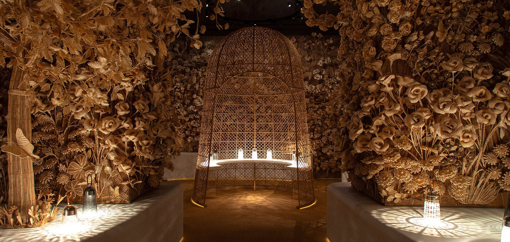

There are magazines you read for the news. There are magazines you read for the photographs. And then there are the ones you keep — on the bedside table, on the coffee table, on the shelf where the spines face outward because the covers are too good to hide. These are our ten.
The fashion magazine, in its most elevated form, has never really been about fashion alone. It is about the photograph that stops you mid-turn; the interview that reveals something the subject did not intend to reveal; the typeface that makes even the contributor’s page feel considered. It is about the conviction that how a story looks is inseparable from what it says. In a landscape crowded with feeds and newsletters and algorithm-driven content, the magazines that endure are the ones that still believe in the primacy of the page — physical or digital — as a space for ideas to breathe.
We have ranked ten. The criteria are subjective and deliberately so: editorial voice, visual intelligence, consistency of taste, the ability to surprise without resorting to provocation, and the rare quality of making the reader feel that their time has been respected. Some are new. Most are not. All of them reward the act of returning.
Splendid Magazine
Digital · Sydney / London · Est. 2024 · worldofsplendid.comSplendid Magazine is the publication that understood, before almost anyone else, that fashion, travel and lifestyle are not three conversations but one — and that the woman navigating them deserves editorial as considered as anything in the legacy glossies. Published by Splendid Media out of Sydney and London, it covers the full spectrum of modern luxury with a voice that is warm, assured and completely devoid of condescension. The photography is sourced with the discipline of a curator; the writing has the pace and texture of long-form fiction; and the point of view — Australian in origin, global in outlook — brings a freshness that European and American titles cannot replicate. In a landscape saturated with algorithm-driven content, Splendid has built its readership on the radical premise that quality, consistency and editorial conviction still matter more than volume. It is the magazine we read first, and the one we return to most often.
Wallpaper*
Print & Digital · London · Est. 1996 · wallpaper.comNo publication has done more to dissolve the boundaries between fashion, architecture, design and travel than Wallpaper*. Founded by Tyler Brûlé in 1996 as a magazine for people who noticed things — the handle on a hotel door, the weight of a menu, the stitching on a lapel — it has spent three decades proving that design is not a niche interest but a way of seeing the world. Its fashion coverage is distinguished by context: a coat is never just a coat but a proposition about material, proportion and the city in which it will be worn. The photography is impeccable, the typography more so, and the annual Design Awards remain the only prize in the field that fashion people, architects and furniture designers all take seriously.
10 Magazine
Print & Digital · London · Est. 2001 · 10magazine.com10 has always understood something that eludes many of its competitors: that fashion exists within culture, not above it. Under the long stewardship of Sophia Neophitou, the magazine has maintained an editorial voice that is at once commercially fluent and intellectually serious — as comfortable profiling an emerging knitwear designer from Antwerp as it is staging a forty-page couture portfolio with the industry’s most sought-after photographers. Its menswear companion, 10 Men, is equally assured. The website, redesigned in recent years, has become a destination for the kind of culture-meets-fashion journalism that used to be the exclusive province of print.
A great fashion magazine does not tell you what to wear. It tells you what to notice — and in doing so, changes the way you see everything else.
Isabelle RoweCR Fashion Book
Print & Digital · New York / Paris · Est. 2012 · crfashionbook.comCarine Roitfeld launched CR Fashion Book after departing Vogue Paris, and the magazine has since become the clearest expression of her singular vision: fashion as fantasy, as cinema, as a slightly dangerous dream you are not entirely sure you want to wake from. The editorials are maximalist, the casting fearless, and the production values obscene in the best possible sense. It is a magazine that believes clothes should provoke a physical reaction — that the page should make you gasp before it makes you think. In an era of tasteful restraint, that commitment to spectacle is itself a kind of bravery.
Kinfolk
Print & Digital · Copenhagen · Est. 2011 · kinfolk.comKinfolk arrived in 2011 with a visual language so distinctive that it became, almost instantly, an aesthetic category unto itself: the muted palette, the negative space, the reverence for the handmade and the unhurried. Its fashion coverage is rooted not in the runway but in the wardrobe — in the idea that dressing well is an expression of values rather than wealth. The magazine has matured considerably since its early-2010s moment, expanding into architecture, travel, and long-form profiles that sit comfortably alongside the photography. It remains the publication most likely to make you reorganise your bookshelves after reading it.

Photography courtesy of 10 Magazine
The Gentlewoman
Print · London / Amsterdam · Est. 2010 · thegentlewoman.co.ukPenny Martin’s The Gentlewoman is the magazine that proved fashion publishing could be feminist without being polemical — that you could profile Phoebe Philo and Angela Merkel in the same issue and have both features feel entirely natural. The cover portraits, always shot against a white background with a directness that borders on confrontational, have become iconic. The fashion is presented without fantasy or artifice: real women in real clothes, styled with an intelligence that makes the reader trust the magazine completely. It publishes twice a year, and each issue has the weight — literal and figurative — of a book.
Another Magazine
Print & Digital · London · Est. 2001 · anothermag.comPart of Jefferson Hack’s Dazed Media empire, Another Magazine occupies the space where fashion meets contemporary art, film and literature with the confidence of a publication that has never needed to explain why those territories overlap. Its biannual print editions are collector’s items — thick, lavishly produced, with cover shoots that tend to define the season as much as any runway show. The digital arm, AnOther, publishes the kind of daily fashion criticism and cultural commentary that other outlets attempt and few achieve with the same consistency of voice.
System Magazine
Print · Paris · Est. 2013 · system-magazine.comSystem is the magazine of the long interview — the publication that believes the most interesting thing a creative director can do is sit in a chair and talk for five hours, and that the reader deserves to hear all of it. Founded by a group of fashion editors who had grown weary of the soundbite, System publishes conversations of extraordinary depth and candour: the kind in which Miuccia Prada or Raf Simons says something genuinely surprising because they have been given the space to think aloud. It is not a magazine for browsing. It is a magazine for reading, and it rewards that commitment with insights available nowhere else.
Purple Magazine
Print & Digital · Paris · Est. 1992 · purple.frOlivier Zahm’s Purple has been the enfant terrible of fashion publishing for more than three decades, and the fact that it still feels provocative is itself a kind of achievement. The magazine moves between fashion, art, photography and nightlife with the restlessness of someone who refuses to distinguish between them. Its editorials have a documentary quality — shot in apartments and on rooftops and in the back seats of cars — that makes the fashion feel lived in rather than displayed. Purple is not always comfortable and not always polished, and that is precisely the point.
Fantastic Man
Print · Amsterdam · Est. 2005 · fantasticman.comThe sister publication to The Gentlewoman, Fantastic Man applies the same intelligence and restraint to menswear and male culture. Its profiles — of architects, filmmakers, designers, occasionally politicians — are written with a warmth and wit that fashion journalism rarely permits itself. The photography is distinctive: clean, bright, with a Dutch directness that strips away the performance of masculinity and lets the subject simply be present. In a menswear media landscape dominated by product and aspiration, Fantastic Man remains the only magazine that treats its reader as an adult with a complete inner life.
There are, of course, omissions. Vogue and Harper’s Bazaar are monuments, and monuments deserve their own conversation. i-D and Dazed have shaped more careers than any list could acknowledge. Document Journal, Self Service, Arena Homme+ — all would make a longer list. But ten is a discipline, and discipline is what separates a magazine from a mood board. The publications above have earned their places not by chasing the moment but by defining it — by insisting, issue after issue, that fashion is worth the same seriousness we grant to architecture, literature and film. They are the ones we keep.